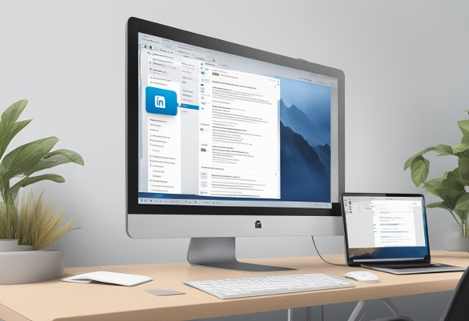

LinkedIn has become a powerful platform for job seekers and recruiters alike. It offers a wide range of features to help users showcase their skills, experiences, and accomplishments. One of the most important features of LinkedIn is the ability to upload a resume. This not only allows recruiters to view your resume, but it also helps you stand out from other applicants. In this article, we will provide a step-by-step guide on how to upload your resume to LinkedIn.
To get started, you will need to prepare your resume. This means ensuring that it is up-to-date, well-formatted, and tailored to the job you are applying for. Once you have your resume ready, you can access your LinkedIn profile. From there, you can upload your resume to your profile or attach it to job applications. It's important to follow the correct steps to ensure that your resume is uploaded correctly and looks professional.
If you're unsure about how to upload your resume to LinkedIn, don't worry. We've got you covered. In the following sections, we will provide a detailed guide on how to prepare your resume, access your LinkedIn profile, upload your resume, and what to do after uploading. We'll also answer some frequently asked questions to help you get the most out of LinkedIn. By following these steps, you'll be able to upload your resume to LinkedIn with ease and increase your chances of landing your dream job.
Before uploading your resume to LinkedIn, it is important to ensure that it is optimized and in the correct file format. This will help increase your chances of being noticed by recruiters and potential employers.
The content of your resume is crucial in catching the attention of recruiters. To optimize your resume, make sure to include relevant keywords and phrases that align with the job description. This will help your resume appear in search results when recruiters are looking for candidates with specific skills and experience. In addition, it is important to highlight your achievements and accomplishments rather than just listing your job responsibilities. Use bullet points to make your resume easy to read and highlight key information.
When uploading your resume to LinkedIn, it is important to choose the right file format. The recommended file format for resumes is PDF, as it preserves the formatting and ensures that your resume looks the same on any device. Avoid using file formats such as Word documents or plain text files, as they may not preserve the formatting and can appear differently on different devices. Additionally, make sure that the file size is not too large, as this can cause issues when uploading to LinkedIn. By following these tips, you can ensure that your resume is optimized and in the correct file format before uploading it to LinkedIn. This will help increase your chances of being noticed by recruiters and potential employers.
When it comes to uploading a resume to LinkedIn, the first step is accessing your LinkedIn profile. The profile section is where you can add or edit your personal information, work experience, education, and skills. Here are the steps to access your LinkedIn profile:
Once you have accessed your LinkedIn profile, you can locate the resume upload feature. This feature allows you to upload your resume to your LinkedIn profile so that potential employers can view it. Here are the steps to locate the resume upload feature:
It is important to note that you can also upload your resume during the job application process or post your resume in your LinkedIn feed. By following these simple steps, you can easily upload your resume to your LinkedIn profile and increase your chances of being noticed by potential employers.
When it comes to uploading a resume to LinkedIn, there are a few steps you need to follow. In this section, we'll go over the process of adding your resume and how to review and submit it.
To add your resume to LinkedIn, you can use one of the multiple methods available. One of the easiest ways is to upload it to job applications. When you apply for a job on LinkedIn, you'll see an option to upload your resume. You can also display your resume on your profile. This can attract the attention of recruiters and increase your professional connections. Another way to add your resume to LinkedIn is to use the "Featured" section. This section allows you to upload media, such as documents, images, and presentations, to your profile. To add your resume to this section, click on "Add Profile Section" and select "Featured". Then, click on the "+" icon and choose "Media". Find your resume file and upload it.
After you've added your resume to LinkedIn, you'll want to review it to make sure it's accurate and up-to-date. Check for any errors, typos, or outdated information. You can also customize your resume to reflect your career goals and relevance. However, make sure to omit any sensitive personal details before making your resume public. Once you've reviewed your resume, you can submit it to job applications or make it public on your profile. However, make sure your resume file is under the LinkedIn upload limit, ideally below 5MB. You can also turn your LinkedIn profile into a resume PDF, which is handy if you need a resume fast. Overall, adding your resume to LinkedIn can help you attract the attention of recruiters and increase your chances of landing a job. By following these steps, you can easily upload your resume and showcase your skills and experience to potential employers.
Once you have successfully uploaded your resume to LinkedIn, there are a few things you can do to manage its visibility and ensure that it remains up-to-date.
By default, your uploaded resume will be visible only to you. However, you can choose to make it visible to your connections or to the public. To manage the visibility of your resume, follow these steps:
Keep in mind that making your resume visible to the public means that anyone, including potential employers and recruiters, can view it. Therefore, it's important to ensure that your resume is up-to-date and presents you in the best possible light.
It's a good idea to update your resume regularly, even if you're not actively job searching. This will ensure that your skills and experience are always up-to-date and that potential employers and recruiters are seeing the most accurate and relevant information about you. To update your resume on LinkedIn, simply upload a new version of your resume file. You can do this by following the same steps you used to upload your original resume. In addition to updating your resume, you can also make other changes to your LinkedIn profile to keep it fresh and relevant. For example, you can add new skills, update your work experience, or share articles and other content related to your industry. By managing the visibility of your resume and keeping it up-to-date, you can increase your chances of being noticed by potential employers and recruiters on LinkedIn.
1. How can I add my resume to my LinkedIn profile?
To add a resume to your LinkedIn profile, you can follow these steps:
2. What steps should I follow to delete my resume from LinkedIn?
To delete your resume from LinkedIn, you can follow these steps:
3. Where can I find my resume in the LinkedIn mobile app?
To find your resume in the LinkedIn mobile app, you can follow these steps:
4. Is there a way to download my LinkedIn resume?
Yes, you can download your LinkedIn resume by following these steps:
5. How can I upload a video resume to my LinkedIn page?
To upload a video resume to your LinkedIn page, you can follow these steps:
6. What method is used to attach a LinkedIn button to my personal resume?
To attach a LinkedIn button to your personal resume, you can follow these steps: